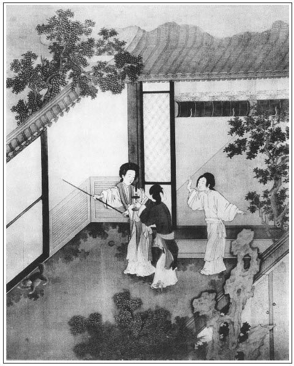

張回此回將雪娥一點者何也？蓋永福寺已修整，眾人將去，而群芳未凋，必寒信先至。故雪娥一夜西風，而蓮李杏梅皆有寒色矣。
林太太，因月兒之薦也。故才寫月兒，必雲在招宣府中供唱來。
寫愛月兒不言語者，見月兒適才受辱，全已歸恨桂姐，故後日思所以陷桂姐者，不一而足也。文心深細如此。
打狗傷人，其惡固雲妒瓶兒矣，乃並傷及其母，宜乎其死比瓶兒更慘也。至於磨鏡。非玉樓之文，乃特特使一老年無依之人說其子之不孝，說其為父母之有愁莫訴處，直刺金蓮之心，以為不孝者警也。我固雲作者以玉樓襯金蓮，至此益信。看其拿姥姥送來小米與磨鏡者，其於姥姥之年老心酸肉痛無復依倚者，能不刺人心懷乎？甚矣！金蓮之可殺，而凡不孝如金蓮者，又皆可殺也。
必雲磨鏡者，蓋欲金蓮磨其惡念以存本心。而鏡者，又以此鏡彼，欲其以磨鏡之老人，而回鑒其母之苦情如一體而不異也。驚閨葉底，不一思量，尚能容於天地間乎？武二哥之刃，靡礪以須者久矣。
玉樓，此書藉以作結之人也。周貧磨鏡，所以勸孝也。以此點醒「孝」字之意，以便結入幻化之孝也。千里結穴，誰其知之？
觀磨鏡文字，作者必有風水深悲，自為苦孝之人，而作此一回苦語，直結入一百回，孝哥幻化，總是此生此世，不能一伸其志於親，為無可奈何之血淚也。
詞曰：
愁旋釋，還似織；淚暗拭，又偷滴。嗔怒著丫頭，強開懷，也只是恨懷千疊。拚則而今已拚了，忘只怎生便忘得！又還倚欄杆，試重聽消息。
──右調《帝台春後》

話說當日西門慶陪親朋飲酒，吃的酩酊大醉，走入後邊孫雪娥房裡來。張旁凡入雪娥房中，必有冷局情事，故此一句乃一回的大關目，蓋此回皆冷脈也，細玩方知。雪娥正顧灶上，看收拾家火，聽見西門慶往房裡去，慌的兩步做一步走。繡眉喜極時光景。先是郁大姐在他炕上坐的，一面攛掇他往月娘房裡和玉簫、小玉一處睡去了。原來孫雪娥也住著一明兩暗三間房──一間床房，一間炕房。西門慶也有一年多沒進他房中來。聽見今日進來，連忙向前替西門慶接衣服，安頓中間椅子上坐的。一面揩抹涼席，收拾鋪床，薰香澡牝，走來遞茶與西門慶吃了，攙扶上床，脫靴解帶，打發安歇。一宿無話。
到次日廿八，乃西門慶正生日。剛燒畢紙，只見韓道國後生胡秀到了門首，下頭口。左右稟知西門慶，就叫胡秀到廳上，磕頭見了。問他貨船在那裡，胡秀遞上書帳，說道：「韓大叔在杭州置了一萬兩銀子緞絹貨物，見今直抵臨清鈔關，缺少稅鈔銀兩，未曾裝載進城。」西門慶看了書帳，心內大喜，吩咐棋童看飯與胡秀吃了，教他往喬親家爹那裡見見去。就進來對吳月娘說：「韓夥計貨船到了臨清，使後生胡秀送書帳上來，如今少不的把對門房子打掃，卸到那裡，尋夥計收拾，開舖子發賣。」月娘聽了，就說：「你上緊尋著，也不早了。」西門慶道：「如今等應二哥來，我就對他說。」不一時，應伯爵來了。西門慶陪著他在廳上坐，就對他說：「韓夥計杭州貨船到了，缺少個夥計發賣。」伯爵就說：「哥，恭喜！今日華誕的日子，貨船到，決增十倍之利，喜上加喜。繡眉貨到與生日何關？然自是諛者投機語。哥若尋賣手，不打緊，我有一相識，卻是父交子往的朋友，原是緞子行賣手，連年運拙，閒在家中，今年才四十多歲，眼力看銀水是不消說，寫算皆精，又會做買賣。此人姓甘，名潤，字出身，現在石橋兒巷住，倒是自己房兒。」西門慶道：「若好，你明日叫他見我。」
正說著，只見李銘、吳惠、鄭奉三個先來磕頭。不一時，雜耍樂工都到了。廂房中打發吃飯。只見答應的節級拿票來回話說：「小的叫唱的，止有鄭愛月兒不到。他家鴇子說，收拾了才待來，被王皇親家人攔往宅裡唱去了。張夾先作一身份，卻是出林太太。小的只叫了齊香兒、董嬌兒、洪四兒三個，收拾了便來也。」西門慶聽見他不來，便道：「胡說！怎的不來？」便叫過鄭奉問：「怎的你妹子我這裡叫他不來？果系是被王皇親家攔了去？」那鄭奉跪下便道：「小的另住，不知道。」西門慶道：「他說往王皇親家唱就罷了？敢量我拿不得來！」便叫玳安兒近前吩咐：「你多帶兩個排軍，就拿我個侍生帖兒，到王皇親家宅內見你王二老爹，就說我這裡請幾位客吃酒，鄭愛月兒答應下兩三日了，好歹放了他來。倘若推辭，連那鴇子都與我鎖了，墩在門房兒裡。這等可惡！」一面叫鄭奉：「你也跟了去。」那鄭奉又不敢不去，走出外邊來，央及玳安兒說道：「安哥，你進去，我在外邊等著罷。一定是王二老爹府裡叫，怕不還沒去哩。有累安哥，若是沒動身，看怎的將就叫他好好的來罷。」玳安道：「若果然往王家去了，等我拿帖兒討去；若是在家藏著，你進去對他媽說，教他快收拾一答兒來，俺就替他回護兩句言語兒，爹就罷了。你每不知道他性格，他從夏老爹宅裡定下，你不來，他可知惱了哩。」這鄭奉一面先往家中說去，玳安同兩個排軍、一名節級也隨後走來。
且說西門慶打發玳安去了，因向伯爵道：「這個小淫婦兒，這等可惡！在別人家唱，我這裡叫他不來。」伯爵道：「小行貨子，他曉的甚麼？他還不知你的手段哩！」西門慶道：「我倒見他酒席上說話兒伶俐，叫他來唱兩日試他，張夾心事。倒這等可惡！」伯爵道：「哥今日揀這四個粉頭，都是出類拔萃的尖兒了。」李銘道：「二爹，你還沒見愛月兒哩！」伯爵道：「我同你爹在他家吃酒，他還小哩，這幾年倒沒曾見，不知出落的怎樣的了。」李銘道：「這小粉頭子，雖故好個身段兒，光是一味妝飾，張夾伏後文。唱曲也會，怎生趕的上桂姐一半兒。張旁為月兒護桂姐一引。爹這裡是那裡？叫著敢不來！就是來了，虧了你？還是不知輕重。」正說著，只見胡秀來回話道：「小的到喬爹那邊見了來了，伺候老爹示下。」西門慶教陳敬濟：「後邊討五十兩銀子，令書僮寫一封書，使了印色，差一名節級，明日早起身，一同下去，與你鈔關上錢老爹，教他過稅之時青目一二。」須臾，陳敬濟取了一封銀子來交與胡秀，胡秀領了文書並稅帖，次日早同起身，不在話下。
忽聽喝的道子響，平安來報：「劉公公與薛公公來了。」西門慶忙冠帶迎接至大廳，見畢禮數，請至卷棚內，寬去上蓋蟒衣，上面設兩張交椅坐下。應伯爵在下，與西門慶關席陪坐。薛內相便問：「此位是何人？」西門慶道：「去年老太監會過來，乃是學生故友應二哥。」薛內相道：「卻是那快耍笑的應先兒麼？」應伯爵欠身道：「老公公還記的，就是在下。」須臾，拿茶上來吃了。只見平安走來稟道：「府裡周爺差人拿帖兒來說，今日還有一席，來遲些，張旁三字直漏後文。叫老爹這裡先坐，不須等罷。」西門慶看了帖兒，便說：「我知道了。」薛內相因問：「西門大人，今日誰來遲？」西門慶道：「周南軒那邊還有一席，使人來說休要等他，只怕來遲些。」薛內相道：「既來說，咱虛著他席面就是。」正說話間，王經拿了兩個帖兒進來：「兩位秀才來了。」西門慶見帖兒上，一個是倪鵬，一個是溫必古，就知倪秀才舉薦了同窗朋友來了，連忙出來迎接。見都穿著衣巾進來，且不看倪秀才，只見那溫必古，年紀不上四旬，生的端莊質樸，落腮鬍，儀容謙仰，舉止溫恭。未知行藏如何，先觀動靜若是。有幾句單道他好：
雖抱不羈之才，慣游非禮之地。功名蹭蹬，豪傑之志已灰；家業凋零，浩然之氣先喪。把文章道學，一併送還了孔夫子；將致君澤民的事業及榮身顯親的心念，都撇在東洋大海。和光混俗，惟其利慾是前；隨方逐圓，不以廉恥為重。峨其冠，博其帶，而眼底旁若無人；闊其論，高其談，而胸中實無一物。三年叫案，而小考尚難，豈望月桂之高攀；廣坐銜杯，遁世無悶，且作巖穴之隱相。張夾罵盡。
西門慶讓至廳上敘禮，每人遞書帕二事與西門慶祝壽。交拜畢，分賓主而坐。西門慶道：「久仰溫老先生大才，敢問尊號？」溫秀才道：「學生賤字日新，號葵軒。」張夾愛日也。西門慶道：「葵軒老先生。」又問：「貴庠？何經？」溫秀才道：「學生不才，府學備數。初學《易經》。繡旁口角妙甚。一向久仰大名，未敢進拜。昨因我這敝同窗倪桂巖道及老先生盛德，敢來登堂恭謁。」西門慶道：「承老先生先施，學生容日奉拜。只因學生一個武官，粗俗不知文理，往來書柬無人代筆。前者因在敝同僚府上會遇桂巖老先生，甚是稱道老先生大才盛德。正欲趨拜請教，不意老先生下降，兼承厚貺，感激不盡。」溫秀才道：「學生匪才薄德，謬承過譽。」茶罷，西門慶讓至卷棚內，有薛、劉二老太監在座。薛內相道：「請二位老先生寬衣進來。」西門慶一面請寬了青衣，請進裡面，各遜讓再四，方才一邊一位，垂首坐下。
正敘談間，吳大舅、范千戶到了，敘禮坐定。不一時，玳安與同答應的和鄭奉都來回話道：「四個唱的都叫來了。」西門慶問：「可是王皇親那裡？」玳安道：「是王皇親宅內叫，還沒起身，小的要拿他鴇子墩鎖，他慌了，才上轎，都一答兒來了。」西門慶即出到廳台基上站立。張夾寫出有心。只見四個唱的一齊進來，向西門慶磕下頭去。那鄭愛月兒穿著紫紗衫兒，白紗挑線裙子。腰肢裊娜，猶如楊柳輕盈；花貌娉婷，好似芙蓉艷麗。正是：
萬種風流無處買，千金良夜實難消。
西門慶便向鄭愛月兒道：「我叫你，如何不來？這等可惡！敢量我拿不得你來！」那鄭愛月兒磕了頭起來，一聲兒也不言語，張旁有心。笑著同眾人一直往後邊去了。繡眉媚極。若出一聲，便費分解，使俗筆為之，不知如何絮絮矣。到後邊，與月娘眾人都磕了頭。看見李桂姐、吳銀兒都在跟前，各道了萬福，說道：「你二位來的早。」張旁桂姐已為所算矣。李桂姐道：「我每兩日沒家去了。」因說：「你四個怎的這咱才來？」董嬌兒道：「都是月姐帶累的俺們來遲了。收拾下，只顧等著他，白不起身。」鄭愛月兒用扇兒遮著臉，只是笑，不做聲。月娘便問：「這位大姐是誰家的？」董嬌兒道：「娘不知道，他是鄭愛香兒的妹子鄭愛月兒。才成人，還不上半年光景。」月娘道：「可倒好個身段兒。」說畢，看茶吃了，一面放桌兒，擺茶與眾人吃。
潘金蓮且揭起他裙子，撮弄他的腳看，說道：「你每這裡邊的樣子，只是恁直尖了，不像俺外邊的樣子趫。俺外邊尖底停勻，你裡邊的後跟子大。」繡眉一到金蓮，遂多此一番絜長較短，然不如此，不足以為金蓮也。月娘向大妗子道：「偏他恁好勝，問他怎的！」一回又取下他頭上金魚撇杖兒來瞧，因問：「你這樣兒是那裡打的？」鄭愛月兒道：「是俺裡邊銀匠打的。」須臾，擺下茶，月娘便叫：「桂姐、銀姐，你陪他四個喫茶。」不一時，六個唱的做一處同吃了茶。李桂姐、吳銀兒便向董嬌兒四個說：「你每來花園裡走走。」繡旁伏案。董嬌兒道：「等我每到後邊走走就來。」李桂姐和吳銀兒就跟著潘金蓮、孟玉樓，出儀門往花園中來。因有人在大卷棚內，就不曾過那邊去。只在這邊看了回花草，就往李瓶兒房裡看官哥兒。官兒心中又有些不自在，睡夢中驚哭，吃不下奶去。李瓶兒在屋裡守著不出來。看見李桂姐、吳銀兒和孟王樓、潘金蓮進來，連忙讓坐。桂姐問道：「哥兒睡哩？」李瓶兒道：「他哭了這一日，才睡下了。」玉樓道：「大娘說，請劉婆子來看他看，你怎的不使小廝請去？」李瓶兒道：「今日他爹好日子，明日請他去罷。」
正說話中間，只見四個唱的和西門大姐、小玉走來。大姐道：「原來你每都在這裡，卻教俺花園內尋你。」玉樓道：「花園內有人，咱們不好去的，瞧了瞧兒就來了。」李桂姐問洪四兒：「你每四個在後邊做甚麼，這半日才來？」洪四兒道：「俺每在後邊四娘房裡喫茶來。」潘金蓮聽了，望著玉樓、李瓶兒笑，張旁摹神。問洪四兒：「誰對你說是四娘來？」董嬌兒道：「他留俺每在房裡喫茶，他每問來：『還不曾與你老人家磕頭，不知娘是幾娘？』他便說：『我是你四娘哩。』」金蓮道：「沒廉恥的小婦奴才，別人稱你便好，誰家自己稱是四娘來。這一家大小，誰興你、誰數你、誰叫你是四娘？漢子在屋裡睡了一夜兒，得了些顏色兒，就開起染房來了。若不是大娘房裡有他大妗子，他二娘房裡有桂姐，你房裡有楊姑奶奶，李大姐有銀姐在這裡，我那屋裡有他潘姥姥，且輪不到往你那屋裡去哩！」繡夾敘述處好不扯淡，在金蓮又是絕正經事。繡眉一開口便非一二語可了，吾恨不得犁其舌。玉樓道：「你還沒曾見哩──今日早晨起來，打發他爹往前邊去了，在院子裡呼張喚李的，便那等花哨起來。」金蓮道：「常言道：奴才不可逞，小孩兒不宜哄。」繡眉六宮生妒，士亦悲焉，況妒嫉如金蓮者乎！又問小玉：「我聽見你爹對你奶奶說，要替他尋丫頭。說你爹昨日在他屋裡，見他只顧收拾不了，因問他。那小淫婦就趁勢兒對你爹說：『我終日不得個閒收拾屋裡，只好晚夕來這屋裡睡罷了。』你爹說：『不打緊，到明日對你娘說，尋一個丫頭與你使便了。』──真個有此話？」繡眉一入有心者之眼，便面目都是疑團，入世之難如是，可歎，可歎。小玉道：「我不曉的，敢是玉簫聽見來？」張旁又伏下「三章約」之消息。金蓮向桂姐道：「你爹不是俺各房裡有人，等閒不往他後邊去。莫不俺每背地說他，本等他嘴頭子不達時務，慣傷犯人，俺每急切不和他說話。」繡眉本為一宵之忿，忽又纏入其生平，小人故入人罪，往往皆然。正說著，繡春拿了茶上來。正吃間，忽聽前邊鼓樂響動，荊都監眾人都到齊了，遞酒上座，玳安兒來叫四個唱的，就往前邊去了。
那日，喬大戶沒來。先是雜耍百戲，吹打彈唱。隊舞才罷，做了個笑樂院本。割切上來，獻頭一道湯飯。只見任醫官到了，冠帶著進來。西門慶迎接至廳上敘禮。任醫官令左右，氈包內取出一方壽帕、二星白金來，與西門慶拜壽。說道：「昨日韓明川說，才知老先生華誕。恕學生來遲！」西門慶道：「豈敢動勞車駕，又兼謝盛儀。外日多謝妙藥。」彼此拜畢，任醫官還要把盞，西門慶辭道：「不消了。」一面脫了大衣，與眾人見過，就安在左首第四席，與吳大舅相近而坐。獻上湯飯並手下攢盒，任醫官謝了，張夾為瓶兒病也。令僕從領下去。四個唱的彈著樂器，在旁唱了一套壽詞。西門慶令上席分頭遞酒。下邊樂工呈上揭帖，劉、薛二內相揀了韓湘子度陳半街《升仙會》雜劇。張旁官哥死，孝哥亦復幻化。才唱得一折，只見喝道之聲漸近。平安進來稟道：「守備府周爺來了。」西門慶慌忙迎接。未曾相見，就先請寬盛服。周守備道：「我來要與四泉把一盞。」薛內相說道：「周大人不消把盞，只見禮兒罷。」於是二人交拜畢，才與眾人作揖，左首第三席安下鍾箸。下邊就是湯飯割切上來，又是馬上人兩盤點心、兩盤熟肉、兩瓶酒。周守備謝了，令左右領下去，然後坐下。張夾又為春梅地眇呼吸消息。一面觥籌交錯，歌舞吹彈，花攢錦簇飲酒。正是：
舞低楊柳樓頭月，歌罷桃花扇底風。
吃至日暮，先是任醫官隔門去的早。西門慶送出來，任醫官因問：「老夫人貴恙覺好了？」西門慶道：「拙室服了良劑，已覺好些。這兩日不知怎的，又有些不自在。明日還望老先生過來看看。」說畢，任醫官作辭上馬而去。落後又是倪秀才、溫秀才起身。西門慶再三款留不住，送出大門，說道：「容日奉拜請教。寒家就在對門收拾一所書院，與老先生居住。連寶眷都搬來，一處方便。學生每月奉上束修，以備菽水之需。」溫秀才道：「多承厚愛，感激不盡。」倪秀才道：「此是老先生崇尚斯文之雅意矣。」打發二秀才去了。
西門慶陪客飲酒，吃至更闌方散。四個唱的都歸在月娘房內，唱與月娘、大妗子、楊姑娘眾人聽。西門慶還在前邊留下吳大舅、應伯爵，復坐飲酒。看著打發樂工酒飯吃了，先去了。其餘席上家火都收了，又吩咐從新後邊拿果碟兒上來，教李銘、吳惠、鄭奉上來彈唱，拿大杯賞酒與他吃。應伯爵道：「哥今日華誕設席，列位都是喜歡。」李銘道：「今日薛爺和劉爺也費了許多賞賜，落後見桂姐、銀姐又出來，每人又遞了一包與他。只是薛爺比劉爺年小，快頑些。」不一時，畫童兒拿上果碟兒來，應伯爵看見酥油泡螺，就先揀了一個放在口內，張旁為下文一路下線。如甘露灑心，入口而化。說道：「倒好吃。」西門慶道：「我的兒，你倒會吃！此是你六娘親手揀的。」伯爵笑道：「也是我女兒孝順之心。」張夾已為觀戲一回下線。說道：「老舅，你也請個兒。」於是揀了一個，放在吳大舅口內。又叫李銘、吳惠、鄭奉近前，每人揀了一個賞他。
正飲酒間，伯爵向玳安道：「你去後邊，叫那四個小淫婦出來。我便罷了，也叫他唱個兒與老舅聽，再遲一回兒，便好去。今日連遞酒，他只唱了兩套，休要便宜了他。」那玳安不動身，說道：「小的叫了他了，在後邊唱與妗子和娘每聽哩，便來也。」伯爵道：「賊小油嘴，你幾時去來？還哄我。」因叫王經：「你去。」那王經又不動。伯爵道：「我使著你每都不去，等我自去罷。」正說著，只聞一陣香風過，覺有笑聲，四個粉頭都用汗巾兒答著頭出來。伯爵看見道：「我的兒，誰養的你恁乖！搭上頭兒，心裡要去的情，好自在性兒。不唱個曲兒與俺每聽，就指望去？好容易！連轎子錢就是四錢銀子，買紅梭兒米買一石七八斗，夠你家鴇子和你一家大小吃一個月。」董嬌兒道：「哥兒，恁便宜衣飯兒，你也入了籍罷了。」
洪四兒道：「這咱晚，七八有二更，放了俺每去罷了。」齊香兒道：「俺每明日還要起早，往門外送殯去哩。」伯爵道：「誰家？」齊香兒道：「是房簷底下開門的那家子。」伯爵道：「莫不又是王三官兒家？前日被他連累你那場事，多虧你大爹這裡人情，替李桂兒說，連你也饒了。這一遭，雀兒不在那窠兒罷了。」繡眉語語靈穎，俗筆有一字否？補出時線索生動，的是針工匠斧。張夾說出。齊香兒笑罵道：「怪老油嘴，汗邪了你，恁胡說。」伯爵道：「你笑話我老？我半邊俏！把你這四個小淫婦兒還不夠擺佈哩。」洪四兒笑道：「哥兒，我看你行頭不怎麼好，光一味好撇。」伯爵道：「我那兒，到跟前看手段還錢。」又道：「鄭家那賊小淫婦兒，吃了糖五老座子兒，白不言語，張旁上文諸妓閒話，總要襯出月兒不語。有些出神的模樣，敢記掛著那孤老兒在家裡？」張夾點明月兒心事。董嬌兒道：「他剛才聽見你說，在這裡有些怯床。」伯爵道：「怯床不怯床，拿樂器來，每人唱一套，你每去罷，我也不留你了。」西門慶道：「也罷，你們兩個遞酒，兩個唱一套與他聽罷。」齊香兒道：「等我和月姐唱。」當下，鄭月兒琵琶，齊香兒彈箏，坐在交床上，歌美韻，放嬌聲，唱了一套《越調·斗鵪鶉》「夜去明來」。張夾為訪月兒一回出題。董嬌兒遞吳大舅酒，洪四兒遞應伯爵酒，在席上交杯換盞，倚翠偎紅。正是：
舞回明月墜秦樓，歌遏行雲迷楚館。
當下，酒進數巡，歌吟兩套，打發四個唱的去了。西門慶還留吳大舅坐，又叫春鴻上來唱了一套南曲，才吩咐棋童備馬，拿燈籠送大舅。大舅道：「姐夫不消備馬，我同應二哥一路走罷。」西門慶道：「既如此，教棋童打燈籠送到家。」吳大舅與伯爵起身作別。西門慶送至大門首，因和伯爵說：「你明日好歹上心，約會了那甘夥計來見我，批合同。我會了喬親家，好收拾那邊房子卸貨。」伯爵道：「哥不消吩咐，我知道。」一面作辭，與吳大舅同行，棋童打著燈籠。吳大舅便問：「剛才姐夫說收拾那裡房子？」伯爵道：「韓夥計貨船到，他新開個緞子鋪，收拾對門房子，叫我替他尋個夥計。」大舅道：「幾時開張？咱每親朋少不的作賀作賀。」繡眉此段似閒，然得此便覺餘波縈迥，文勢不窘。須臾，出大街，到了伯爵小胡同口上，吳大舅要棋童：「打燈籠送你應二爹到家。」伯爵不肯，說道：「棋童，你送大舅，我不消燈籠，進巷內就是了。」一面作辭，張夾細。分路回家。棋童便送大舅去了。
西門慶打發李銘等唱錢去了，回後邊月娘房中歇了一夜。張旁雪、月已有爭寒之勢。張夾細。到次日，果然伯爵領了甘出身，穿青衣走來拜見，講說買賣之事。西門慶叫將崔本來會喬大戶，那邊收拾房子，開張舉事。喬大戶對崔本說：「將來凡一應大小事，隨你親家爹這邊只顧處，不消計較。」當下就和甘夥計批了合同。就立伯爵作保，得利十分為率：西門慶五分，喬大戶三分，其餘韓道國、甘出身與崔本三分均分。一面修蓋土庫，裝畫牌面，待貨車到日，堆卸開張。後邊又獨自收拾一所書院，請將溫秀才來作西賓，專修書柬，回答往來士夫。每月三兩束修，四時禮物不缺，又撥了畫童兒小廝伏侍他。繡旁伏。西門慶家中宴客，常請過來陪侍飲酒，俱不必細說。
不覺過了西門慶生辰。第二日早晨，就請了任醫官來看李瓶兒，又在對門看著收拾。楊姑娘先家去了，李桂姐、吳銀兒還沒家去。吳月娘買了三錢銀子螃蟹，午間煮了，請大妗子、李桂姐、吳銀兒眾人圍著吃了一回。只見月娘請的劉婆子來看官哥兒，吃了茶，李瓶兒就陪他往前邊房裡去了。劉婆子說：「哥兒驚了，要住了奶。」又留下幾服藥。月娘與了他三錢銀子，打發去了。孟玉樓、潘金蓮和李桂姐、吳銀兒、大姐都在花架底下，放小桌兒，鋪氈條，同抹骨牌賭酒頑耍。孫雪娥吃眾人贏了七八鍾酒，不敢久坐，就去了。張夾又點雪娥。眾人就拿李瓶兒頂缺。張眉借雪娥襯出瓶兒為眾人可欺之人，下脫手入金蓮不費力也。金蓮又教吳銀兒、桂姐唱了一套。當日眾姊妹飲酒至晚，月娘裝了盒子，相送李桂姐、吳銀兒家去了。
潘金蓮吃的大醉歸房，因見西門慶夜間在李瓶兒房裡歇了一夜，早晨又請任醫官來看他，惱在心裡。知道他孩子不好，進門不想天假其便──黑影中躧了一腳狗屎，到房中叫春梅點燈來看，一雙大紅緞子鞋，滿幫子都展污了。登時柳眉剔豎，星眼圓睜，叫春梅打著燈把角門關了，拿大棍把那狗沒高低只顧打，打的怪叫起來。張眉不記密約時打狗關門，此時之打狗，固知報應一絲不爽。然則，合後文貓驚官哥，又是牆頭喚貓對照，一絲不爽也。李瓶兒使過迎春來說：「俺娘說，哥兒才吃了老劉的藥，睡著了，教五娘這邊休打狗罷。」潘金蓮坐著，半日不言語。張夾寫出。一面把那狗打了一回，開了門放出去，又尋起秋菊的不是來。看著那鞋，左也惱，右也惱，因把秋菊喚至跟前說：「這咱晚，這狗也該打發去了，只顧還放在這屋裡做甚麼？是你這奴才的野漢子？你不發他出去，教他恁遍地撒屎，繡眉「教他」二字來得奇特。把我恁雙新鞋兒──連今日才三四日兒──躧了恁一鞋幫子屎。知道我來，你也該點個燈兒出來，你如何恁推聾妝啞裝憨兒的？」春梅道：「我頭裡就對他說，你趁娘不來，早餵他些飯，關到後邊院子裡去罷。
他佯打耳睜的不理我，還拿眼兒瞅著我。」婦人道：「可又來，賊膽大萬殺的奴才，我知道你在這屋裡成了把頭，把這打來不作準。」因叫他到跟前：「瞧，躧的我這鞋上的齷齪！」哄得他低頭瞧，提著鞋拽巴，兜臉就是幾鞋底子。打的秋菊嘴唇都破了，只顧搵著抹血，忙走開一邊。婦人罵道：「好賊奴才，你走了！」教春梅：「與我採過來跪著，取馬鞭子來，把他身上衣服與我扯去。好好教我打三十馬鞭子便罷，但扭一扭兒，我亂打了不算。」春梅於是扯了他衣裳，婦人教春梅把他手扯住，雨點般鞭子打下來，打的這丫頭殺豬也似叫。那邊官哥才合上眼兒，又驚醒了。繡眉可恨。又使了繡春來說：「俺娘上覆五娘，饒了秋菊罷，只怕諕醒了哥哥。」那潘姥姥正𢱉在裡間炕上，聽見打的秋菊叫，一骨碌子爬起來，在旁邊勸解。見金蓮不依，落後又見李瓶兒使過繡春來說，又走向前奪他女兒手中鞭子，說道：「姐姐少打他兩下兒罷，惹得他那邊姐姐說，只怕諕了哥哥。為驢扭棍不打緊，倒沒的傷了紫荊樹。」金蓮緊自心裡惱，又聽見他娘說了這一句，越發心中攛上把火一般。須臾，紫漒了面皮，把手只一推，險些兒不把潘姥姥推了一交。張旁以下寫逆子之樣如此。便道：「怪老貨，你與我過一邊坐著去！不干你事，來勸甚麼？甚麼紫荊樹、驢扭棍，單管外合裡應。」潘姥姥道：「賊作死的短壽命，繡旁罵得痛快。我怎的外合裡應？我來你家討冷飯吃，教你恁頓摔我？」金蓮道：「你明日夾著那老𣭈走，怕他家拿長鍋煮吃了我！」繡眉一念情慾之起，忿怒之發，不難滅倫敗紀，不獨一金蓮也。潘姥姥聽見女兒這等擦他，走到裡邊屋裡嗚嗚咽咽哭去了，隨著婦人打秋菊。打夠二三十馬鞭子，然後又蓋了十欄杆，打的皮開肉綻，才放出來。又把他臉和腮頰都用尖指甲掐的稀爛。繡眉可恨。李瓶兒在那邊，只是雙手握著孩子耳朵，腮邊墮淚，敢怒而不敢言。
西門慶在對門房子裡，與伯爵、崔本、甘夥計吃了一日酒散了，逕往玉樓房中歇息。到次日，周守備家請吃補生日酒，不在家。李瓶兒見官哥兒吃了劉婆子藥不見動靜，夜間又著驚諕，一雙眼只是往上吊吊的。因那日薛姑子、王姑子家去，走來對月娘說：「我向房中拿出他壓被的一對銀獅子來，要教薛姑子印造《佛頂心陀羅經》，趕八月十五日岳廟裡去捨。」那薛姑子就要拿著走，被孟玉樓在旁說道：「師父你且住，大娘，你還使小廝叫將賁四來，替他兌兌多少分兩，就同他往經鋪裡講定個數兒來，每一部經多少銀子，到幾時有，才好。你教薛師父去，他獨自一個，怎弄的來？」繡眉老到。張夾玉樓能為嚴州作地。月娘道：「你也說的是。」一面使來安兒叫了賁四來，向月娘眾人作了揖，把那一對銀獅子上天平兌了，重四十一兩五錢。月娘吩咐，同薛師父往經鋪印造經數去了。
潘金蓮隨即叫孟玉樓：「咱送送兩位師父去，就前邊看看大姐，他在屋裡做鞋哩。」兩個攜著手兒往前邊來。賁四同薛姑子、王姑子去了。金蓮與玉樓走出大廳東廂房門首，見大姐正在簷下納鞋，金蓮拿起來看，卻是沙綠潞綢鞋面。玉樓道：「大姐，你不要這紅鎖線子，爽利著藍頭線兒，好不老作些！你明日還要大紅提跟子？」大姐道：「我有一雙是大紅提跟子的。這個，我心裡要藍提跟子，所以使大紅線鎖口。」金蓮瞧了一回，三個都在廳台基上坐的。玉樓問大姐：「你女婿在屋裡不在？」大姐道：「他不知那裡吃了兩盅酒，在屋裡睡哩。」孟玉樓便向金蓮道：「剛才若不是我在旁邊說著，李大姐恁哈帳行貨，就要把銀子交姑子拿了印經去。經也印不成，沒腳蟹行貨子藏在那大人家，你那裡尋他去？早是我說，叫將賁四來，同他去了。」金蓮道：「恁有錢的姐姐，不賺他些兒是傻子，只象牛身上拔一根毛兒。你孩兒若沒命，休說捨經，隨你把萬里江山捨了也成不的。如今這屋裡，只許人放火，不許俺每點燈。──大姐聽著，也不是別人。偏染的白兒不上色，偏他會那等輕狂使勢，大清早晨，刁蹬著漢子請太醫看。他亂他的，俺每又不管。每常在人前會那等撇清兒說話：『我心裡不耐煩，他爹要便進我屋裡推看孩子，雌著和我睡，誰耐煩！教我就攛掇往別人屋裡去了。俺每自恁好罷了，繡旁好得有數。繡眉說得鑿鑿，即使瓶兒百吻，亦無可辨。背地還嚼說俺們。』那大姐姐偏聽他一面詞兒。不是俺每爭這個事，怎麼昨日漢子不進你屋裡去，你使丫頭在角門子首叫進屋裡？推看孩子，你便吃藥，一徑把漢子作成和吳銀兒睡了一夜，繡眉說作成銀兒，隱然見不作成我為可怨，把自家長技冤人，固是小人度君子之腹。張夾點出。一逕顯你那乖覺，叫漢子喜歡你，那大姐姐就沒的話說了。昨日晚夕，人進屋裡躧了一腳狗屎，打丫頭趕狗，也嗔起來，使丫頭過來說，諕了他孩子了。俺娘那老貨，又不知道，走來勸甚麼的驢扭棍傷了紫荊樹。我惱他那等輕聲浪氣，叫我墩了他兩句，他今日使性子家去了。──去了罷！教我說，他家有你這樣窮親戚也不多，沒你也不少。」玉樓笑道：「你這個沒訓教的子孫，你一個親娘母兒，你這等訌他！」金蓮道：「不是這等說。──惱人的腸子，單管黃貓黑尾，外合裡應，只替人說話。吃人家碗半，被人家使喚。得不的人家一個甜頭兒，千也說好，萬也說好。──想著迎頭兒養了這個孩子，把漢子調唆的生根也似的，把他便扶的正正兒的，把人恨不的躧到泥裡頭還躧。今日恁的天也有眼，你的孩兒也生出病來了。」
正說著，只見賁四往經鋪裡交回銀子，來回月娘話，看見玉樓、金蓮和大姐都在廳台基上坐的，只顧在儀門外立著，不敢進來。來安走來說道：「娘每閃閃兒，賁四來了。」金蓮道：「怪囚根子，你叫他進去，不是才乍見他來？」來安兒說了，賁四低著頭，一直後邊見月娘、李瓶兒，說道：「銀子四十一兩五錢，眼同兩個師父交付與翟經兒家收了。講定印造綾殼《陀羅》五百部，每部五分；絹殼經一千部，每部三分。共該五十五兩銀子。除收過四十一兩五錢，還找與他十三兩五錢。准在十四日早抬經來。」李瓶兒連忙向房裡取出一個銀香球來，張旁結果生蛋一語。叫賁四上天平兌了，十五兩。李瓶兒道：「你拿了去，除找與他，別的你收著，換下些錢，到十五日廟上捨經，與你們做盤纏就是了，省的又來問我要。」賁四於是拿了香球出來，李瓶兒道：「四哥，多累你。」賁四躬著身說道：「小人不敢。」走到前邊，金蓮、玉樓又叫住問他：「銀子交付與經鋪了？」賁四道：「已交付明白。共一千五百部經，共該五十五兩銀子，除收過四十一兩五錢，剛才六娘又與了這件銀香球。」玉樓、金蓮瞧了瞧，沒言語，賁四便回家去了。玉樓向金蓮說道：「李大姐像這等都枉費了錢。張旁子虛之財，已費過半矣。他若是你的兒女，就是鎯頭也樁不死；他若不是你兒女，莫說捨經造像，隨你怎的也留不住他。信著姑子，甚麼繭兒幹不出來！」張夾先為官哥一引。
兩個說了一回，都立起來。金蓮道：「咱每往前邊大門首走走去。」因問大姐：「你去不去？」大姐道：「我不去。」潘金蓮便拉著玉樓手兒，兩個同來到大門裡首站立。因問平安兒：「對門房子都收拾了？」平安道：「這咱哩？昨日爹看著就都打掃乾淨了。後邊樓上堆貨，昨日教陰陽來破土，樓底下還要裝廂房三間，土庫擱緞子，門面打開，一溜三間，都教漆匠裝新油漆，在出月開張。」玉樓又問：「那寫書的溫秀才，家小搬過來了不曾？」平安道，「從昨日就過來了。今早爹吩咐，把後邊那一張涼床拆了與他，又搬了兩張桌子、四張椅子與他坐。」金蓮道：「你沒見他老婆怎的模樣兒？」平安道：「黑影子坐著轎子來，誰看見他來！」
正說著，只見遠遠一個老頭兒，斯琅琅搖著驚閨葉過來。潘金蓮便道：「磨鏡子的過來了。」教平安兒：「你叫住他，與俺每磨磨鏡子。我的鏡子這兩日都使的昏了，吩咐你這囚根子，看著過來再不叫！俺每出來站了多大回，怎的就有磨鏡子的過來了？」那平安一面叫住磨鏡老兒，放下擔兒，金蓮便問玉樓道：「你要磨，都教小廝帶出來，一答兒裡磨了罷。」於是使來安兒：「你去我屋裡，問你春梅姐討我的照臉大鏡子、兩面小鏡子兒，就把那大四方穿衣鏡也帶出來，教他好生磨磨。」玉樓吩咐來安：「你到我屋裡，教蘭香也把我的鏡子拿出來。」那來安兒去不多時，兩隻手提著大小八面鏡子，懷裡又抱著四方穿衣鏡出來。金蓮道：「臭小囚兒，你拿不了，做兩遭兒拿，如何恁拿出來？一時叮噹了我這鏡子怎了？」玉樓道：「我沒見你這面大鏡子，是那裡的？」金蓮道：「是人家當的，我愛他且是亮，安在屋裡，早晚照照。」因問：「我的鏡子只三面？」玉樓道：「我大小只兩面。」金蓮道：「這兩面是誰的？」來安道：「這兩面是春梅姐的，捎出來也叫磨磨。」金蓮道：「賊小肉兒，他放著他的鏡子不使，成日只撾著我的鏡子照，弄的恁昏昏的。」共大小八面鏡於，交付與磨鏡老叟，教他磨。當下絆在坐架上，使了水銀，那消頓飯之間，都淨磨的耀眼爭光。婦人拿在手內，對照花容，猶如一汪秋水相似。有詩為證：
蓮萼菱花共照臨，風吹影動碧沉沉。
一池秋水芙蓉現，好似姮娥傍月陰。
婦人看了，就付與來安兒收進去。玉樓便令平安，問鋪子裡傅夥計櫃上要五十文錢與磨鏡的。那老子一手接了錢，只顧立著不去。玉樓教平安問那老子：「你怎的不去？敢嫌錢少？」那老子不覺眼中撲簌簌流下淚來，哭了。張旁老親無靠，形影如此。平安道：「俺當家的奶奶問你怎的煩惱。」老子道：「不瞞哥哥說，老漢今年癡長六十一歲，在前丟下個兒子，二十二歲尚未娶妻，專一浪游，不干生理。老漢日逐出來掙錢養活他。張旁逆子依父母如此。他又不守本分，常與街上搗子耍錢。昨日惹了禍，同拴到守備府中，當土賊打回二十大棍。歸來把媽媽的裙襖都去當了。媽媽便氣了一場病，打了寒，睡在炕上半個月。老漢說他兩句，他便走出來不往家去，教老漢逐日抓尋他，不著個下落。待要賭氣不尋他，老漢恁大年紀，止生他一個兒子，往後無人送老；張夾石人落淚，直刺金蓮。有他在家，見他不成人，又要惹氣。似這等，乃老漢的業障。有這等負屈銜冤，張夾石人落淚，直刺金蓮。各處告訴，所以淚出痛腸。」張眉負屈含冤，「人」子字加之，父母之心，直令天下不孝人攢心刺骨。玉樓叫平安兒：「你問他，你這後娶婆兒今年多大年紀了？」老子道：「他今年五十五歲了，男女花兒沒有，如今打了寒才好些，只是沒將養的，心中想塊臘肉兒吃。老漢在街上恁問了兩三日，白討不出塊臘肉兒來。甚可嗟歎人子。」張夾潘姥姥哭死，金蓮亦不問矣。玉樓道：「不打緊處，我屋裡抽屜內有塊臘肉兒哩。」即令來安兒：「你去對蘭香說，還有兩個餅錠，教他拿與你來。」金蓮叫：「那老頭子，問你家媽媽兒吃小米兒粥不吃？」老漢子道：「怎的不吃！那裡有？可知好哩。」金蓮也叫過來安兒來：「你對春梅說，把昨日你姥姥捎來的新小米兒量二升，就拿兩根醬瓜兒出來，與他媽媽兒吃。」張眉作者固借金蓮以諷天下人，見逆如金蓮，何嘗良心滅絕，是知凡天下為人子者皆有此心，奈之何獨獨我不能盡孝哉！張夾以己母遺之物贈人不能養之母，不一返思，直豬狗矣。那來安去不多時，拿出半腿臘肉、兩個餅錠、二升小米、兩個醬瓜兒，叫道：「老頭子過來，造化了你！你家媽媽子不是害病想吃，只怕害孩子坐月子，想定心湯吃。」那老子連忙雙手接了，安放在擔內，望著玉樓、金蓮唱了個喏，揚長挑著擔兒，搖著驚閨葉去了。平安道：「二位娘不該與他這許多東西，被這老油嘴設智誆的去了。他媽媽子是個媒人，昨日打這街上走過去不是，幾時在家不好來？」金蓮道：「賊囚，你早不說做甚麼來？」平安道：「罷了，也是他造化。可可二位娘出來看見叫住他，照顧了他這些東西去了。」正是：
閒來無事倚門楣，恰見驚閨一老來。
不獨纖微能濟物，無緣滴水也難為。張旁哭盡天下父母。
文回文禹門云：潘金蓮可殺而不可留，凡有血氣耳目者，固無不知之也。乃有與之同惡相濟，伙穿一條褲子如龐春梅者，又有與之異口同聲，一鼻孔出氣如孟玉樓者，其為人何如乎？夫近朱者赤，近墨者黑。是言為其所染也，其本質不必赤與黑，近之則然也。若春梅、玉樓之與金蓮，豈第近之而已，直是逢迎之，激勵之，慫恿之，扶持而幫助之。金蓮之惡，成全於二人者實多。
觀此回打秋菊，春梅實唆之。譏瓶兒，玉樓實倡之。官哥、李氏之死，金蓮為首，玉樓，春梅謂非加功者，吾不信也。玉樓非赤，然而已紫矣。春梅非黑，然而已青矣。西門家中，又安得昭質無虧者哉！乃閱者往往偏護玉樓而高抬春梅也。果何意見乎？其目光直不可尺計。
按：「高抬春梅」，系指竹坡原評：「《金瓶》內有兩個人為特特用意寫之，其結果，亦皆可觀，如春梅與玳安兒是也。於同作丫環時必用幾遍筆墨描寫春梅，心高志大，氣象不同。」。